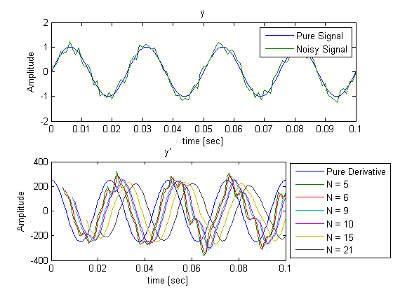

robustDiffOneSide
differentiates using smooth noise-robust one sided differentiation formula
y_dot = robustDiffOneSide(y, dt, N)
Contents
Inputs
y - signal/vector to differentiate dt - time or distance between points in y N - Number of points to use in differentiation. This value must be positive integer greater than or equal 2.
Outputs
y_dot - differentiated signal/vector
Description
robustDiffOneSide differentiates a signal/vector numerically using N points before the current point. Only past information is used to calculate the derivative. In signal processing, this is called causal. The larger the value of N, the more high frequency noise is suppressed unlike Savitsky-Golay filters and Central Difference methods (see references). Note that the derivative is not estimated at the beginning of y. This means that (N-1) points at the beginning y_dot are NaN. See the example.
Example
- Signal Parameters
sampleRate = 1000; % Hz dt = 1/sampleRate; t = 0:dt:1; signalFrequency = 40; % Hz noiseMeanFrequency = 350; % Hz noiseMeanAmplitude = 0.2; % * *Calculate Signal* pureSignal = sin(2*pi*signalFrequency*t);
Noise has an amplitude range of 75% to 125% of mean amplitude Noise varies in frequency from 90% to 110% of mean frequency Noise has a phase delay of 0.3rad/s
noisySignal = sin(2*pi*signalFrequency*t) + noiseMeanAmplitude*(0.75+0.5*rand(size(t))).*cos(2*pi*noiseMeanFrequency*(0.9+0.1*rand(size(t))).*t-0.3);
- Calculate Derivative
signal_dot = 2*pi*signalFrequency*cos(2*pi*signalFrequency*t); signal_dot_estimate5 = robustDiffOneSide(noisySignal,dt,5); signal_dot_estimate6 = robustDiffOneSide(noisySignal,dt,6); signal_dot_estimate9 = robustDiffOneSide(noisySignal,dt,9); signal_dot_estimate10 = robustDiffOneSide(noisySignal,dt,10); signal_dot_estimate15 = robustDiffOneSide(noisySignal,dt,15); signal_dot_estimate21 = robustDiffOneSide(noisySignal,dt,21);
- Plots Signals and Derivative of Signals
Please note the one sided formulas have a significant phase delay. This means you should take this into account for your signal.
subplot(211) plot(t,pureSignal,t,noisySignal); xlim([0 4/signalFrequency]) xlabel('time [sec]') ylabel('Amplitude') title('y') legend('Pure Signal','Noisy Signal'); subplotHandle2 = subplot(212); set(subplotHandle2,'Position',[0.13 0.114285714285714 0.596785714285714 0.33687707641196]); plot(t, signal_dot, ... t, signal_dot_estimate5, ... t, signal_dot_estimate6, ... t, signal_dot_estimate9, ... t, signal_dot_estimate10, ... t, signal_dot_estimate15, ... t, signal_dot_estimate21); xlim([0 4/signalFrequency]) xlabel('time [sec]') ylabel('Amplitude') title('y''') legendHandle = legend( 'Pure Derivative', ... 'N = 5', ... 'N = 6', ... 'N = 9', ... 'N = 10', ... 'N = 15', ... 'N = 21'); set(legendHandle,... 'Position',[0.738390216719632 0.123486590038313 0.255357142857143 0.322222222222222]); disp(['Please note the one sided formulas have a significant phase delay. This ' ... 'means you should take this into account for your signal.']);
Please note the one sided formulas have a significant phase delay. This means you should take this into account for your signal.
Formula
Both a recursive and non-Recursive method exist to calculate the coefficients used on the formula. The recurrence is an integer sequence that can be found in The On-line Encyclopedia of Integer Sequences under A008315. Link: http://oeis.org/A008315
- Recursive Formula
coefficients = zeros(1,n+1); coefficients(1) = 1; for iRow = 2:n previousCoefficients = coefficients; for iColumn = 2:((iRow+1)/2) coefficients(iColumn) = previousCoefficients(iColumn-1) + previousCoefficients(iColumn); end end % Reflect coefficients about the center of the vector and multiply by -1 coefficients(ceil((n+1)/2+1):end) = -coefficients(floor((n+1)/2):-1:1);
- Non-Recursive Formula
k = 1:(n+1)/2;
coefficients(1) = 1;
coefficients(2:ceil((n+1)/2)) = gamma(n)./(gamma(k+1).*gamma(n-k)).*(n-2*k)./(n-k);
% Reflect coefficients about the center of the vector and multiply by -1
coefficients(ceil((n+1)/2+1):end) = -coefficients(floor((n+1)/2):-1:1);
References
This function is based on the formulas by Pavel Holoborodko from his website: http://www.holoborodko.com/pavel/numerical-methods/numerical-derivative/smooth-low-noise-differentiators/ A big thanks is due to Pavel Holoborodko for developing these formulas.